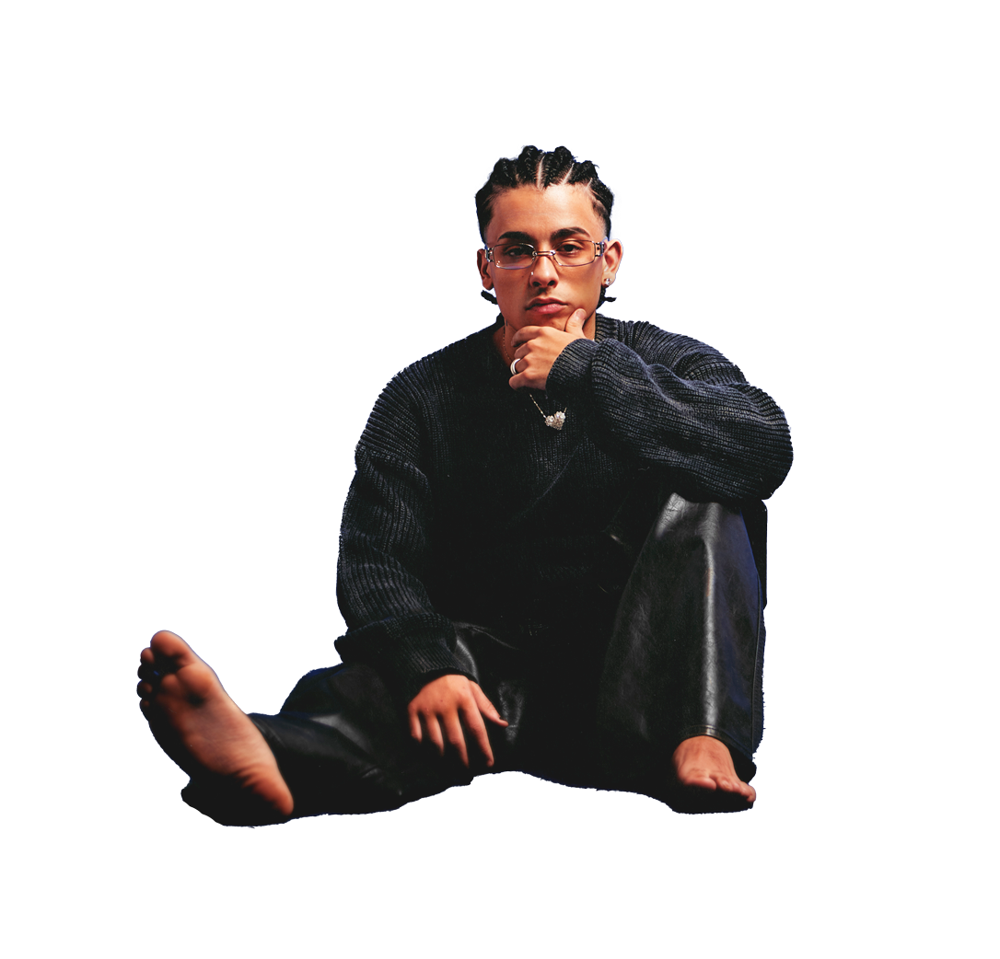

Trueno comenzó a ganar notoriedad como freestyler en las plazas de Buenos Aires. Su habilidad para rimar y su carisma en el escenario rápidamente lo hicieron destacar en competencias locales. Participó en competencias de freestyle como El Quinto Escalón, una de las ligas más populares de rap en Argentina, donde se hizo conocido por su estilo enérgico y su habilidad para improvisar. El Quinto Escalón fue un trampolín para muchos jóvenes raperos de la escena argentina, y Trueno no fue la excepción. Este torneo impulsó su carrera, dándole visibilidad y haciéndolo ganar una gran base de seguidores.
